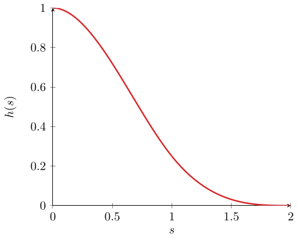
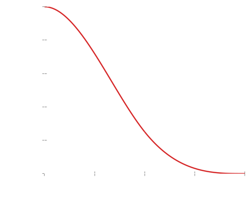
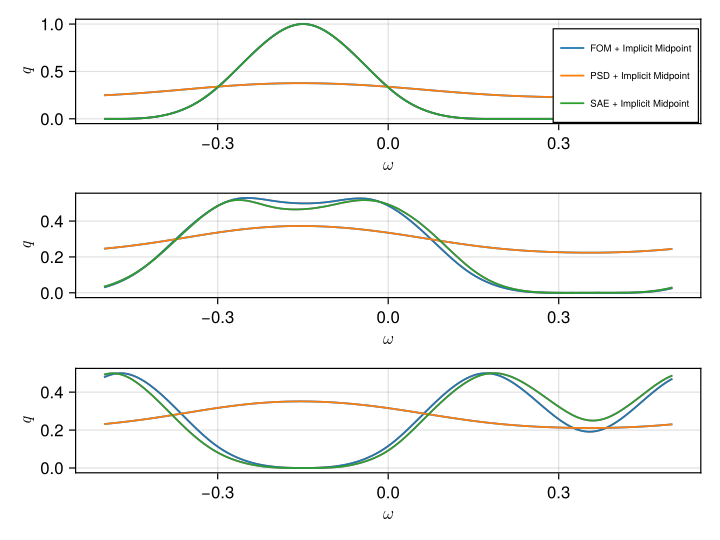
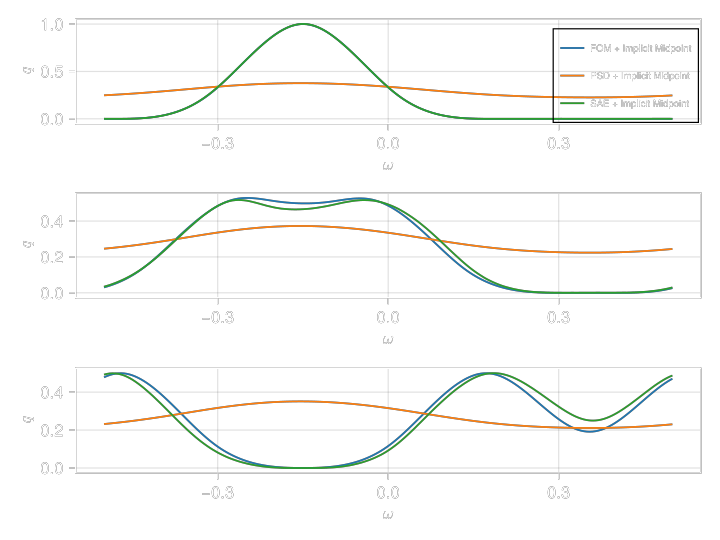
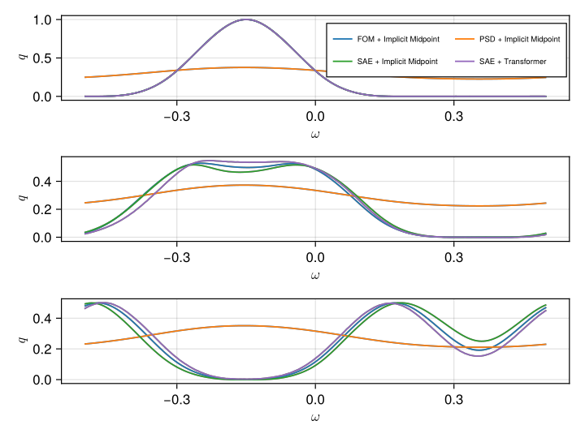
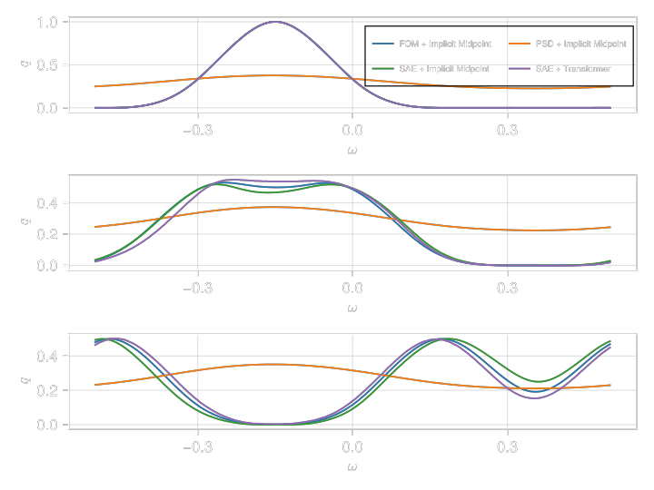
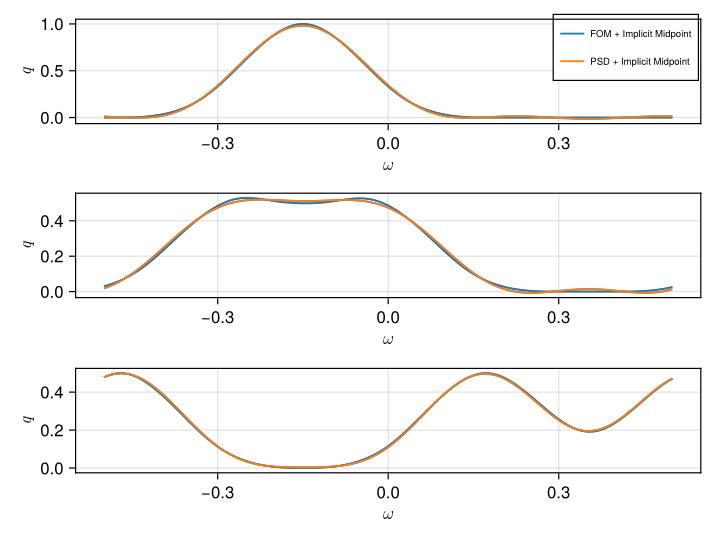
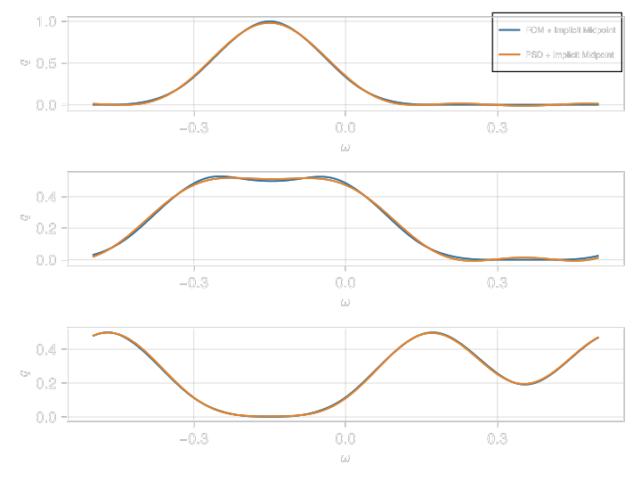
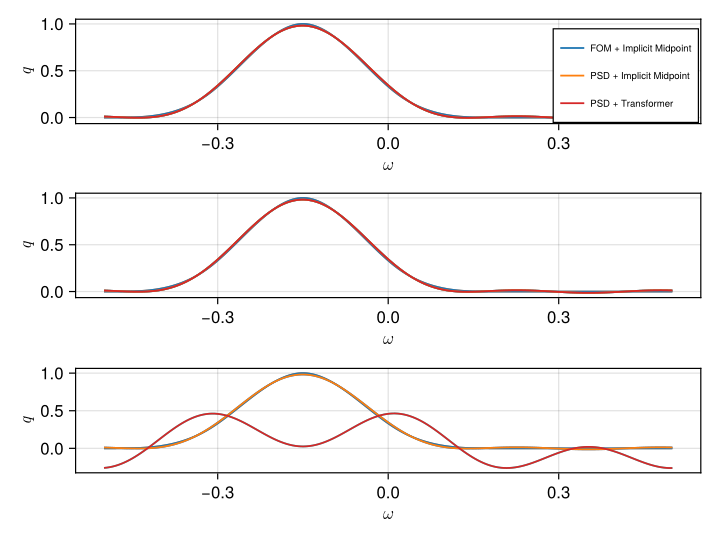
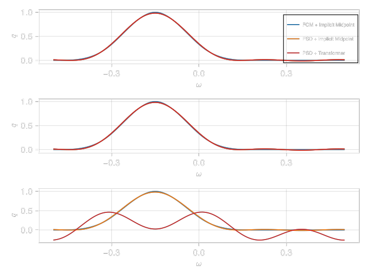

Symplectic Autoencoders and the Toda Lattice
In this tutorial we use a symplectic autoencoder to approximate the solution of the Toda lattice with a lower-dimensional Hamiltonian model and compare it with standard proper symplectic decomposition.
As with any neural network we have to make the following choices:
- specify the architecture,
- specify the type and backend,
- pick an optimizer for training the network,
- specify how you want to perform batching,
- choose a number of epochs,
where points 1 and 3 depend on a variable number of hyperparameters.
For the symplectic autoencoder point 1 is done by calling SymplecticAutoencoder, point 2 is done by calling NeuralNetwork, point 3 is done by calling Optimizer and point 4 is done by calling Batch.
The system
The Toda lattice [89] is a prototypical example of a Hamiltonian PDE. It is described by
\[ H(q, p) = \sum_{n\in\mathbb{Z}}\left( \frac{p_n^2}{2} + \alpha e^{q_n - q_{n+1}} \right).\]
Starting from this equation we further assume a finite number of particles $N$ and impose periodic boundary conditions:
\[\begin{aligned} q_{n+N} & \equiv q_n \\ p_{n+N} & \equiv p_n. \end{aligned}\]
In this tutorial we want to reduce the dimension of the big system by a significant factor with (i) proper symplectic decomposition (PSD) and (ii) symplectic autoencoders (SAE). The first approach is strictly linear whereas the second one allows for more general mappings.
Using the Toda lattice in numerical experiments
In order to use the Toda lattice in numerical experiments we have to pick suitable initial conditions. For this, consider the third-degree spline:
\[h(s) = \begin{cases} 1 - \frac{3}{2}s^2 + \frac{3}{4}s^3 & \text{if } 0 \leq s \leq 1 \\ \frac{1}{4}(2 - s)^3 & \text{if } 1 < s \leq 2 \\ 0 & \text{else.} \end{cases}\]
Plotted on the relevant domain it looks like this:
 
We end up with the following choice of parametrized initial conditions:
\[u_0(\mu)(\omega) = h(s(\omega, \mu)), \quad s(\omega, \mu) = 20 \mu |\omega + \frac{\mu}{2}|,\]
where the $\omega$ is an element of the domain $\Omega = [-0.5, 0.5].$ For the purposes of this tutorial we will use the default value for $\mu$ provided in GeometricProblems:
import GeometricProblems.TodaLattice as tl
tl.μ0.3We thus look at the displacement of $N = 200$ particles on the periodic domain $\Omega = [-0.5, 0.5]/~ \simeq S^1$ where the equivalence relation $~$ indicates that we associate the points $-0.5$ and $0.5$ with each other.
Get the data
The training data can very easily be obtained by using the packages GeometricProblems and GeometricIntegrators:
using GeometricIntegrators: integrate, ImplicitMidpoint
using GeometricMachineLearning
pr = tl.hodeproblem(; tspan = (0.0, 800.))
sol = integrate(pr, ImplicitMidpoint())We then put the format in the correct format by calling DataLoader[1]:
dl_cpu = DataLoader(sol; autoencoder = true, suppress_info = true)Also note that the keyword autoencoder was set to true when calling DataLoader. The keyword argument supress_info determines whether data loader provides some additional information on the data it is called on.
Train the network
We now want to compare two different approaches: PSDArch and SymplecticAutoencoder. For this we first have to set up the networks:
const reduced_dim = 2
psd_arch = PSDArch(dl_cpu.input_dim, reduced_dim)
sae_arch = SymplecticAutoencoder(dl_cpu.input_dim, reduced_dim; n_encoder_blocks = 4,
n_decoder_blocks = 4,
n_encoder_layers = 2,
n_decoder_layers = 2)Training a neural network is usually done by calling an instance of Optimizer in GeometricMachineLearning. PSDArch however can be solved directly by using singular value decomposition and this is done by calling solve!:
psd_nn_cpu = NeuralNetwork(psd_arch, CPU(), eltype(dl_cpu))
solve!(psd_nn_cpu, dl_cpu)0.6946587819586485The SymplecticAutoencoder we train with the AdamOptimizerWithDecay however[2]:
using CUDA
const n_epochs = 262144
const batch_size = 4096
backend = CUDABackend()
dl = DataLoader(dl_cpu, backend, Float32)
sae_nn_gpu = NeuralNetwork(sae_arch, CUDADevice(), Float32)
o = Optimizer(sae_nn_gpu, AdamOptimizerWithDecay(integrator_train_epochs))
# train the network
o(sae_nn_gpu, dl, Batch(batch_size), n_epochs)After training we map the network parameters to cpu:
const mtc = GeometricMachineLearning.map_to_cpusae_nn_cpu = mtc(sae_nn_gpu)The online stage with a standard integrator
After having trained our neural network we can now evaluate it in the online stage of reduced complexity modeling:
psd_rs = HRedSys(pr, encoder(psd_nn_cpu), decoder(psd_nn_cpu); integrator = ImplicitMidpoint())
sae_rs = HRedSys(pr, encoder(sae_nn_cpu), decoder(sae_nn_cpu); integrator = ImplicitMidpoint())We integrate the full system (again) as well as the two reduced systems[3]:
FOM + Implicit Midpoint: 116.611271 seconds (232.87 k allocations: 119.185 MiB, 0.01% gc time)
PSD + Implicit Midpoint: 2.801956 seconds (11.07 M allocations: 7.253 GiB, 21.40% gc time)
SAE + Implicit Midpoint: 237.690133 seconds (95.72 M allocations: 96.268 GiB, 3.54% gc time)And plot the solutions for
time_steps = (0, 300, 800) 
We can see that the SAE has much more approximation capabilities than the PSD. But even though the SAE reasonably reproduces the full-order model (FOM), we see that the online stage of the SAE takes even longer than evaluating the FOM. In order to solve this problem we have to make the online stage more efficient.
The online stage with a neural network
Instead of using a standard integrator we can also use a neural network that is trained on the reduced data. For this:
const integrator_train_epochs = 65536
const integrator_batch_size = 4096
const seq_length = 4
integrator_architecture = StandardTransformerIntegrator(reduced_dim;
transformer_dim = 20,
n_blocks = 3,
n_heads = 5,
L = 3,
upscaling_activation = tanh)
integrator_nn = NeuralNetwork(integrator_architecture, backend)
integrator_method = AdamOptimizerWithDecay(integrator_train_epochs)
o_integrator = Optimizer(integrator_method, integrator_nn)
# map from autoencoder type to integrator type
dl_integration = DataLoader(dl; autoencoder = false)
integrator_batch = Batch(integrator_batch_size, seq_length)loss = GeometricMachineLearning.ReducedLoss(encoder(sae_nn_gpu), decoder(sae_nn_gpu))
train_integrator_loss = o_integrator( integrator_nn,
dl_integration,
integrator_batch,
integrator_train_epochs,
loss)We can now evaluate the solution:
@time "time stepping with transformer" time_series = iterate(mtc(integrator_nn), ics; n_points = length(sol.t), prediction_window = seq_length)time stepping with transformer: 0.227818 seconds (1.89 M allocations: 322.665 MiB, 24.30% gc time) 
Note that integration of the system with the transformer is orders of magnitudes faster than any comparable method and also leads to an improvement in accuracy over the case where we build the reduced space with the symplectic autoencoder and use implicit midpoint in the online phase.
While training the symplectic autoencoder we completely ignore the online phase, but only aim at finding a good low-dimensional approximation to the solution manifold. This is why we observe that the approximated solution differs somewhat form the actual one when using implicit midpoint for integrating the low-dimensional system (blue line vs. green line).
Here we compared PSD with an SAE whith the same reduced dimension. One may argue that this is not entirely fair as the PSD has much fewer parameters than the SAE:
(parameterlength(psd_nn_cpu), parameterlength(sae_nn_cpu))(398, 904366)and we also saw that evaluating PSD + Implicit Midpoint is much faster than SAE + Implicit Midpoint. We thus model the system with PSDs of higher reduced dimension:
const reduced_dim2 = 8
psd_arch2 = PSDArch(dl_cpu.input_dim, reduced_dim2)
psd_nn2 = NeuralNetwork(psd_arch2, CPU(), eltype(dl_cpu))
solve!(psd_nn2, dl_cpu)0.03624886679095656And we see that the error is a lot lower than for the case reduced_dim = 2. We now proceed with building the reduced Hamiltonian system as before, again using HRedSys:
psd_rs2 = HRedSys(pr, encoder(psd_nn2), decoder(psd_nn2); integrator = ImplicitMidpoint())We integrate this PSD to check how big the difference in performance is:
PSD + Implicit Midpoint: 11.635070 seconds (11.23 M allocations: 37.094 GiB, 18.83% gc time)We can also plot the comparison with the FOM as before:
 
We see that for a reduced dimension of $2n = 8$ the PSD looks slightly better than the SAE for $2n = 2.$ As with the SAE we can also use a transformer to integrate the dynamics on the low-dimensional space:
const integrator_architecture2 = StandardTransformerIntegrator(reduced_dim2;
transformer_dim = 20,
n_blocks = 3,
n_heads = 5,
L = 3,
upscaling_activation = tanh)
integrator_nn2 = NeuralNetwork(integrator_architecture2, backend)
const integrator_method2 = AdamOptimizerWithDecay(integrator_train_epochs)
const o_integrator2 = Optimizer(integrator_method2, integrator_nn2)
loss2 = GeometricMachineLearning.ReducedLoss(encoder(psd_nn2), decoder(psd_nn2))For training we leave dl_integration, integrator_batch and integrator_train_epochs unchanged:
train_integrator_loss2 = o_integrator(integrator_nn2, dl_integration, integrator_batch, integrator_train_epochs, loss2)We again integrate the system and then plot the result:
@time "time stepping with transformer" time_series2 = iterate(mtc(integrator_nn2), ics; n_points = length(sol.t), prediction_window = seq_length)time stepping with transformer: 0.251973 seconds (1.89 M allocations: 328.647 MiB, 32.56% gc time)We see that using the transformer on the six-dimensional PSD-reduced system takes slightly longer than using the transformer on the two-dimensional SAE-reduced system. The accuracy is much worse however. Before we plotted the solution for:
time_steps(0, 300, 800)Now we do so with:
time_steps = (0, 4, 5) 
Here we however see a dramatic deterioration in the quality of the approximation. We assume that this because the transformer_dim was chosen to be 20 for the SAE and the PSD, but in the second case the reduced space is of dimension six, whereas it is of dimension two in the first case. This may mean that we need an even bigger transformer to find a good approximation of the reduced space.
References
- [68]
- L. Peng and K. Mohseni. Symplectic model reduction of Hamiltonian systems. SIAM Journal on Scientific Computing 38, A1–A27 (2016).
- [65]
- C. Greif and K. Urban. Decay of the Kolmogorov N-width for wave problems. Applied Mathematics Letters 96, 216–222 (2019).
- [70]
- P. Buchfink, S. Glas and B. Haasdonk. Symplectic model reduction of Hamiltonian systems on nonlinear manifolds and approximation with weakly symplectic autoencoder. SIAM Journal on Scientific Computing 45, A289–A311 (2023).
- [3]
- B. Brantner and M. Kraus. Symplectic autoencoders for Model Reduction of Hamiltonian Systems, arXiv preprint arXiv:2312.10004 (2023).
- 1For more information on
DataLoadersee the corresponding section. - 2It is not feasible to perform the training on CPU, which is why we use
CUDA[11] here. We further perform the training in single precision. - 3All of this is done with
ImplicitMidpointas integrator.